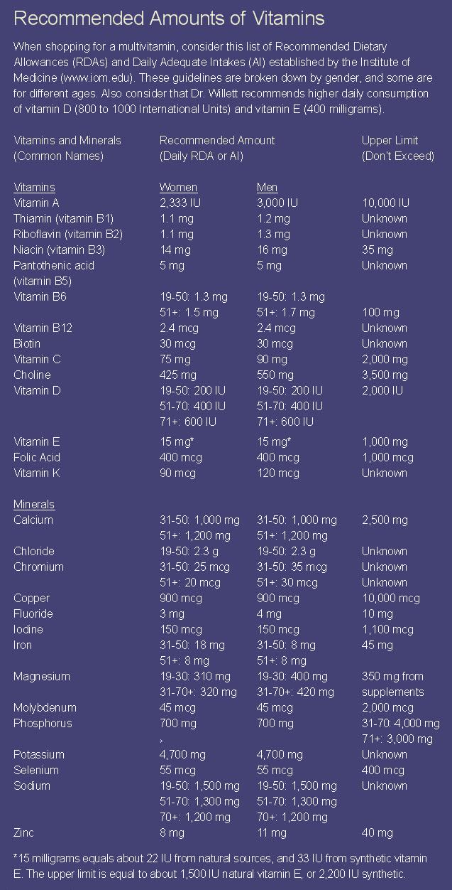
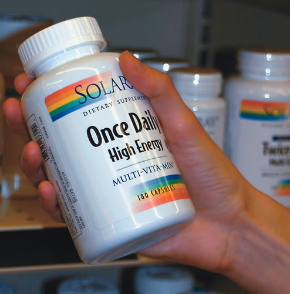

Once upon a time, vitamins were thought of only as nutrients needed in small amounts to prevent diseases with exotic-sounding names such as beriberi, pellagra, scurvy and rickets. Because these diseases were becoming rarer, it seemed that most Americans were getting enough vitamins.
New findings suggest that some people-probably many people-don’t get enough of the essential micronutrients. Vitamins are playing newly recognized, or suspected, roles in preventing many diseases. By increasing the amount of vitamins and minerals we get, mostly from food, but maybe from supplements as well, we could substantially improve our long-term health.
THE THREE B'S
The five vitamins that most people don’t get enough of in their diets are folic acid, vitamin B6, vitamin B12, vitamin D and vitamin E. Three of these are B vitamins-B6, B12 and folic acid. There are a total of eight B vitamins, but new evidence suggests that these three may play pivotal roles in reducing heart disease and cancer.
High levels of the amino acid homocysteine are being studied as a risk factor for heart disease, and B6, B12 and folic acid help recycle homocysteine into harmless amino acids. The Physicians’ Health Study, a long-term study of 22,000 men, found that high homocysteine levels tripled the chances of having a heart attack. The Nurses’ Health Study, which recorded data from 121,000 female nurses, found that those with the highest intakes of vitamin B6 and folic acid were about half as likely to have heart attacks or die from heart disease as women with the lowest intakes.
Folic acid, or folate, also helps guide the development of the embryonic spinal cord. Pregnant women who get too little folic acid increase the chances that their babies will be born with neural tube defects such as spina bifida and anencephaly. Folic acid also may temper the increase in breast cancer seen in women who average more than one alcoholic drink per day. The same is true for colon cancer, another disease that is more common among alcohol drinkers than nondrinkers.
Getting enough of these vitamins doesn’t mean taking megadoses. For most people, it means just reaching the current recommended daily intakes of 400 micrograms for folic acid, 1.3 to 1.7 milligrams for vitamin B6-depending on your age and gender-and 2.4 micrograms of vitamin B12. Good sources of B6 include meat, nuts and beans. Liver is the most efficient food source of B12 and is rich in folic acid. Unfortunately, only a small fraction of U.S. adults achieve the recommended levels of these B vitamins through diet alone.
VITAMIN D
Vitamin D is a hormone made by your skin. Most of what we get from food comes from dairy products (which, by law, must be fortified with vitamin D), vitamin-fortified breakfast cereals and eggs from hens fed vitamin D. Although calcium usually gets all the credit for building bones and preventing fractures, vitamin D should get at least equal billing.
There are other reasons for getting more vitamin D. In test tubes, vitamin D strongly inhibits the growth and reproduction of a variety of cancer cells, including those of the breast, ovary, colon, prostate and brain. New studies suggest that the same thing happens in our bodies. Several small studies suggest that getting more vitamin D, especially from sunlight, helps lower blood pressure. Getting too little may contribute to heart failure and peripheral artery disease (blocked blood flow in the legs) and may be implicated in the artery-clogging process known as atherosclerosis. In the Nurses’ Health Study, women who took vitamin D supplements were about half as likely to develop multiple sclerosis as those who didn’t.
People who can bask in strong sunlight for a few minutes on most days year-round make plenty of vitamin D, but that rules out everyone living north of San Francisco, Denver, Indianapolis and Philadelphia: During the winter months, the amount of ultraviolet light hitting those northern regions isn’t enough to generate vitamin D. It also rules out people who can’t get out for a 15-minute walk when the sun is high in the sky-in other words, millions of people. Your best bet is to find a multivitamin that delivers 800 to 1,000 International Units (IU) of vitamin D. A standard multivitamin plus a vitamin D supplement is another option.
VITAMIN E
In the Nurses’ Health Study and the Health Professionals Follow-up Study, we saw lower risks of heart disease in women and men who took vitamin E supplements of at least 100 IU for at least two years. At the end of 2004, an international team pooled the data from nine long-term studies in order to tease out whether vitamin E had an impact on heart disease. According to the researchers, “The results weakly support the hypothesis that higher dietary intake of vitamin E … reduces the risk of coronary heart disease.” At the beginning of 2005, an analysis of the results of 19 vitamin E trials suggested that users of high-dose vitamin E (more than 400 IU per day) might have a slightly higher death rate than non-users. However, most of the trials in the analysis included only volunteers with heart disease, and an exhaustive review of vitamin E by the Institute of Medicine showed it is safe at much higher doses. In a recent large trial among women, vitamin E supplements reduced total cardiovascular deaths by 24 percent. The final role of vitamin E in preventing heart disease remains unsettled, but it is wise not to rely only on high doses of vitamin E to protect you against a heart attack or stroke.
Some early studies suggest that vitamin E supplements may prevent age-related dementia. Another promising line of research involves vitamin E and amyotrophic lateral sclerosis (Lou Gehrig’s disease). Vitamin E can be found in many nuts, whole grains and leafy greens, but unlike many other vitamins, vitamin E is not present in food alone at levels thought to be protective-and at the levels used in most studies.
Getting 400 IU of vitamin E means taking a high-E multivitamin or a vitamin E supplement along with a typical multivitamin. Because vitamin E can reduce the blood’s ability to clot, people who take blood thinners should talk with their health-care providers before taking vitamin E supplements.
SUPPLEMENTS: WHAT TO LOOK FOR
A multivitamin can’t in any way replace healthy eating. It gives you barely a scintilla of the vast array of healthful nutrients found in food. But it does offer a nutritional backup to fill in the holes that can plague even the most conscientious eaters. Research is pointing ever more strongly to the fact that several ingredients in a standard multivitamin-especially vitamins B6 and B12, folic acid and vitamin D-are essential players in preventing heart disease, cancer, osteoporosis and other chronic diseases. A year’s supply usually costs less than $40, or about a dime a day-it’s the best nutritional bang for your buck.
You don’t need a designer vitamin, a name-brand vitamin, or an “all-natural” formulation. A store-brand, RDA-level multivitamin is a perfectly fine place to start. Avoid getting too much preformed vitamin A, also called retinol, which can block the effects of vitamin D. When shopping for a multivitamin, look for one that gets all or most of its vitamin A content from beta carotene. Try to keep your intake of retinol from supplements to less than 2,000 IU per day. Too much zinc also can be a problem. It’s relatively easy to get too much zinc from supplements, and symptoms of zinc overload can begin appearing with just a little over 15 milligrams per day. These include a depressed immune system, poor wound healing and skin problems. High zinc intake also may promote the development or growth of prostate cancer. Despite the fact that most U.S. residents actually get less than the recommended daily amount of zinc, there’s little evidence that these lower levels cause health problems.
Extra vitamin D is definitely worth pursuing. Standard multivitamins offer 400 IU, less than half of what’s needed for optimal health. You can make up the other 400 to 600 IU by taking a separate vitamin D tablet or capsule. A few companies are making supplements that replace most of the preformed vitamin A with beta carotene and contain adequate doses of vitamin D. One example is the Basic One multivitamin formulated by Dr. Kenneth Cooper. It contains plenty of vitamin A (3,000 IU), all in the form of beta carotene and other carotenoids, along with 800 IU of vitamin D.
For most people without heart disease, an extra vitamin E supplement probably makes sense. Even though the ending to the vitamin E story hasn’t yet been written, at least 400 milligrams a day may be needed for optimal health. Standard multivitamins contain only 30 IU.
So far, there’s no consensus on ideal vitamin intakes because scientific knowledge about them is still evolving. We could definitely use more evidence about the benefits of commonly used vitamins. At the same time, harm isn’t likely when they are taken in reasonable doses, and the cost is minimal. In this situation, it seems a bit foolish to demand that all the evidentiary “i’s” be dotted and “t’s” crossed before acting.
Walter C. Willett, M.D., is chair of the Department of Nutrition at the Harvard School of Public Health and a professor of medicine at the Harvard Medical School.
|
SCOTT HOLLIS Multivitamin brands offer different levels of many nutrients, so shop around before selecting one. |
 |
 |